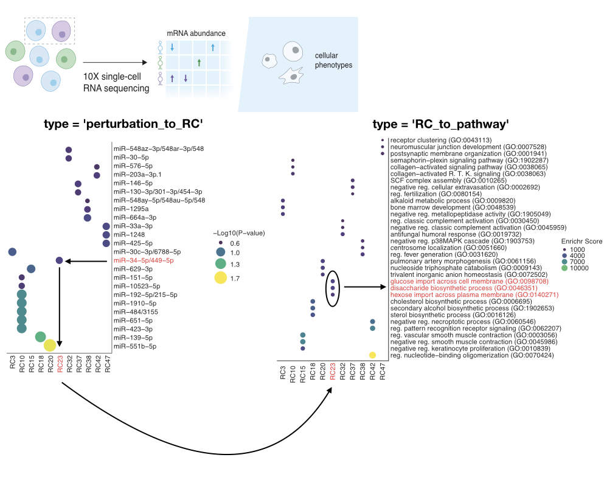

Overview
This package identifies novel pathway shifts in scRNA-seq data using large shifts in varimax rotation component space of samples from a control. It creates a linear model between your samples and the control to identify which rotated component most corresponds to each sample allowing novel pathway discovery of perturbations. This package is orginally tested on data with small RNA perturbations (miRNA and tRNA fragments) but is more broadly applicable to other perturbations where the effect on the transcriptome from a perturbation is being studied such as drug treatment or mRNA knockdown.
This package utilizes enrichR on the backend for identifying pathways using gene set enrichment from genes with high weights in their respective perturbation-associated rotated component.
Installation
- Install the latest version from GitHub as follows:
# Install
if(!require(devtools)) install.packages("devtools")
devtools::install_github("ssobt/VariPath")Please make sure you have packages in the DESCRIPTION file installed, some may need manual installation via install.packages(), BiocManager::install(), or installation with conda if you are using a conda environment (recommended). If these do not automatically install and manual installation is required, use the following for VariPath:
# Install
if(!require(devtools)) install.packages("devtools")
devtools::install_github("ssobt/VariPath", upgrade = "never", lib = "/VariPath_package_destination_folder/")Usage
Identify and plot pathway shifts associated with each perturbation
.libPaths("/VariPath_package_destination_folder/") ## add location of package to searchable library paths
library(VariPath)
# make sure single cell RNA-seq data is in a Seurat object with a specified metadata column with sample identity
## IMPORTANT: make sure the control sample is called 'TuD_NC' in your specified metadata column ##
out = sc_varipath(seurat_obj = adata.R, perturbation_column = 'miR.family')
## Plot ##
options(repr.plot.width = 20, repr.plot.height = 10) ## edit to change plot dimensions
plot_sc_varipath(sc_varipath_out = out, type = 'perturbation_to_RC')
plot_sc_varipath(sc_varipath_out = out, type = 'RC_to_pathway')
Documentation
Full documentation is at ssobt.github.io/VariPath.
-
Getting started with VariPath — a walkthrough vignette: why a varimax rotation makes principal components interpretable enough to hand to enrichment, what
sc_varipath()expects as input, what each element of its output is for, and how to read a rotated component without over-reading it. -
Function reference — arguments and return values for
sc_varipath()andplot_sc_varipath().
Related
- txnheterogeneity — quantifies transcriptional and open-chromatin heterogeneity across bulk RNA-seq, scRNA-seq, and scATAC-seq.
- VariPath came out of the Decoy-seq study: Choi B*, Sobti S*, Soto LM, Charbonneau T, Sababi A, Navickas A, Najafabadi HS, Goodarzi H. Decoy-seq unlocks scalable genetic screening for regulatory small noncoding RNAs. bioRxiv 2025. doi:10.1101/2025.01.25.634869